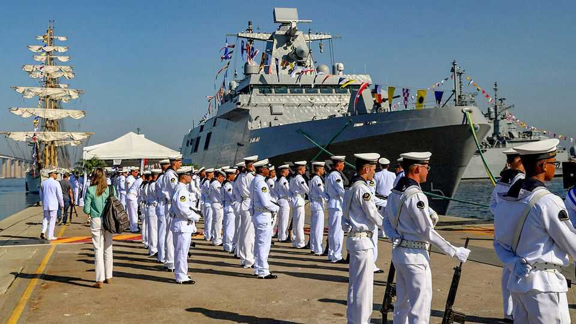

Brazil is at last managing to build its own warships
That is sensible in a newly volatile hemisphere

Aug 13th 2026
Over the past few decades Brazil’s naval shipbuilding efforts have mostly sunk without trace (literally, in the case of one aircraft-carrier, which was scuttled in an effort to hide its uselessness). Since the 1970s the country has launched and abandoned at least three warship programmes. But in April it commissioned a new frigate-class ship, the Tamandaré, the first of four to be built entirely in Brazil. The construction of a second batch of four has been provisionally agreed. The vessel can detect submarines and fire missiles and torpedoes. A helicopter pad allows for wide areas to be patrolled without a fleet of costly destroyers. The craft would be a decent staple for any navy.
Thyssenkrupp Marine Systems (TKMS), a German shipbuilding company, agreed to work with Embraer, Brazil’s aerospace champion, to construct the ships in Itajaí, in the southern state of Santa Catarina. Their successful production is a dramatic improvement for a country that lacks a reputation for military muscle. Brazil has hitherto used second-hand European frigates built in the 20th century. The structure of the project is designed to encourage domestic supply chains and create a skilled local workforce. The country has previously built some small warships at home, but the Tamandaré-class is a big step up.
This success marks a broader effort to beef up defence. As a share of GDP, Brazil’s military spending has for 30 years been flat or falling. It is now 1.1%. That will rise. Brazil spent $24bn on its armed forces last year, an increase of 13% from 2024. As well as the new frigates, it also has plans to build nuclear-powered submarines, which would be a first for a non-nuclear power. In 2022 the government ordered 19 tactical and refuelling aircraft. In March it unveiled the first supersonic fighter assembled in Brazil, a Gripen jet built in partnership with Sweden’s Saab.
Governments all over Latin America are spending more on defence. Peru and Colombia have both placed multi-billion-dollar fighter-jet orders in the past year, for example, Peru for American F-16s and Colombia for Swedish Gripens.
It is tempting to conclude that more defence spending, and the desire to build at home, is due to shifting geopolitics in Latin America. In July Brazil’s government said that “there exists a risk of US military force being used against Brazilian territory.” It was referring to recent events such as the capture of the Venezuelan dictator, Nicolás Maduro, in January, and the American bombing campaign against boats allegedly involved in drug-trafficking in the Caribbean and Eastern Pacific. With the United States adopting a more threatening posture, perhaps it is no wonder that countries in its hemisphere want greater means to defend themselves.
But Louis Bearne at the International Institute for Strategic Studies, a global think-tank, says Brazil’s spending is “a continuation of a long-term trend”. The expansion, he says, is an overdue modernisation programme, rather than a response to any particular threat, including one from the United States. The programme to build the Tamandaré-class frigates was launched in 2017. Memorandums of understanding for the development of the Gripen with Saab were first signed in 2013. Both predate today’s tension with the United States. The recent efforts have merely followed a string of failed attempts.
Brazil’s success helps to make the case for more domestic defence procurement in future. The government is eager to build more military and naval hardware at home. Its original motive was to boost Brazil’s industry. The question now is whether Brazil can sustain the existing programmes and the extra spending they require. Mr Bearne says success should protect the frigates from cuts. Even if Brazil has a different government after an election in October, a new right-wing one is unlikely to undermine a solid defence-manufacturing base. For the moment, the project seems to be on an even keel. ■